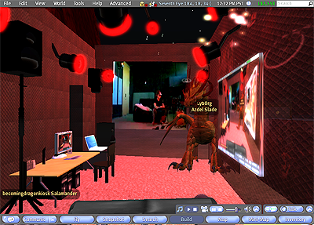

CODE DRIFT
Becoming Dragon:
A Transversal Technology Study
Micha Crdenas
Becoming Dragon is a mixed-reality performance that questions the one-year requirement of "Real Life Experience" that transgender people must fulfill in order to receive Gender Confirmation Surgery, and asks if this could be replaced by one year of "Second Life Experience" to lead to Species Reassignment Surgery. For the performance, I lived for 365 hours immersed in the online 3D environment of Second Life with a head mounted display, only seeing the physical world through a video-feed, and used a motion-capture system to map my movements into Second Life. The installation included a stereoscopic projection for the audience. A Puredata patch was used to process my voice to create a virtual dragon's voice. During the year of research and development of this project, I began my real life hormone replacement therapy and wrote poetry and prose about the experience which was included in the Becoming Dragon performance. The project was realized through a collaboration between myself, Christopher Head, Elle Mehrmand, Kael Greco, Ben Lotan and Anna Storelli.
|
| Becoming Dragon, Installation View |
In "Epistemology of the Closet," Eve Kosofsky Sedgwick uses a queer analysis to introduce instability into the western episteme. Sedgwick suggests that
many of the major nodes of thought and knowledge in twentieth-century Western culture as a whole are structured -- indeed, fractured -- by a chronic, now endemic crisis of homo/heterosexual definition... that an understanding of virtually any aspect of modern Western culture must be, not merely incomplete, but damaged in its central substance to the degree that it does not incorporate a critical analysis of modern homo/heterosexual definition. [1]
Similarly, transsexual author and artist Sandy Stone makes a claim that the transsexual body and experience opens up new possibilities for knowledge and experience as well; Stone says that "here on the gender borders at the close of the twentieth century, with the faltering of phallocratic hegemony and the bumptious appearance of heteroglossic origin accounts, we find the epistemologies of white male medical practice, the rage of radical feminist theories and the chaos of lived gendered experience meeting on the battlefield of the transsexual body." [2] In this paper, I will chart two lines which drove Becoming Dragon, becoming and mixing, in order to understand how new genders and sexualities open up epistemological possibilities.
My approach for this paper was inspired in part by Deleuze's book Two Regimes of Madness. In Two Regimes, Deleuze states that "one of the principle goals of schizoanalysis would be to look in each one of us for the crossing lines that are those of desire itself: non-figurative abstract lines of escape, that is, deterritorialization." [3] The approach Deleuze describes is tied up with Felix Guattari's notion of the transversal, of finding lines of thought which cut across other abstract lines -- an idea that has been taken up by many contemporary thinkers, such as digital media theorist Anna Munster. Munster's book Materializing New Media "proposes and puts into motion the idea of transversal technology studies" as an alternative to "an interdisciplinary study launched from established disciplines such as media and cultural studies," in order to "understand digital culture itself as a series of diagrammatic lines" and their "intersections... and inflections." [4] From the place of interest and desire of my own transgender experience, I wish to apply transversal technology studies to find new lines of flight or quasi-causes which cross multiple strata of technology.
With Becoming Dragon, I sought to explore two distinct material strata of technology, virtual worlds and biotechnology, both of which can be seen as technologies of transformation. From this perspective, one can consider new similarities and progressions or unfoldings, distinct from historical, temporal analysis, or analysis that is centered on technological developments. Considering various components of becoming -- embodied experiences, social experiences, psychological experiences, sexual experiences -- virtual worlds and biotechnology have both unique and shared resonances and forces.
Another line of analysis I wish to explore across and through these two strata of technology is a line tracing the operation of mixing. In the mixing of realities and the mixing of gendered physical attributes, such as hormones, frictions and harmonies also emerge, such as the resistance of the original body to change, the new possibilities for sexual expression and the dysfunctionality of the new arrangement in a system already presupposing clear distinctions.
Still, the quality of this knowledge must be examined. If the knowledge relies on a phenomenological approach, based on my own observations, then how is it decentered and distrupted by the subject in transition? If the transgender subject is one in constant transition, then what meaning does the statement "I see X" hold when the "I" has changed from the beginning of the statement to the end of it? And what other possibilities of knowing can such a transgender approach to technology studies or experimental media production be informed by? This paper will explore the Electronic Disturbance Theater's approach to generating new epistemological systems, which we [5] call "Science of the Oppressed," and which is dedicated to reconsidering how knowledge is produced and structured -- according to what value system and for whose interest.
The Trajectory of Becoming, Technologies of Transformation
The goal of this paper is not to claim that transgender is a privileged subject position that has access to unique knowledge. Instead, the goal is to look at how transgender desire, both individual and community desire, can serve as a useful factor in shaping epistemological inquiry and serve to reveal new insights through new organizations of data. One line of investigation which drove Becoming Dragon was the consideration of various technologies for their usefulness in a process of becoming. This thinking was motivated by my own desire to initiate a transgender transformation in my own life and body. Following this desire, I began to explore the possibilities of experimentation that I had access to. I found that both virtual worlds and biotechnology, specifically medical technologies which are used for gender changes, such as surgery and hormones, offer a promise of becoming something else, of having a new body and a new life.
The epistemological topology of becoming is shaped by the radical unknowability of the future. Sedgwick discusses a similar topology, saying that "the suggested closeted Supreme Court clerk who struggles with the possibility of self-revelation... would have an imagination filled with possibilities beyond those foreseen by [the biblical] Esther in her moment of risk. It is these possibilities that mark the distinctive structures of the epistemology of the closet." [6] In the specific case of becoming, one can never fully grasp the reality of the being to come, its details and nuances, which only become apparent through lived experience. A decision to become something else, other than what one is in the present moment, can therefore only be based on the limited knowledge of informed speculation. For transsexuals and transgender people, this is particularly evident in the process of deciding to change one's gender or one's body. Still, one must make a decision as to how to act, what to become. [7]
Virtual Worlds as Rapid Prototyping
Virtual worlds such as Second Life offer a new epistemological possibility, not a bridging of what Sedgwick calls the "brute incommensurability" [8] of the unknowability of the future, but a kind of rapid prototyping, a limited knowledge. Prototyping opens a space of knowledge, creating a test version which provides some information about the thing being prototyped, but not a complete knowledge of it.
In Multi-User Virtual Environments (MUVEs), [9] one has the ability to test out a new body, a new kind of hair or a new gender in a social realm where one has a visual image of that new body. As with other kinds of rapid prototyping, such as three-dimensional printing or fabrication, the test version has limits. Clearly, while experimenting with a new gender or hair color or species in a MUVE, one is free of the social consequences and physical dangers of such experimentation in one's daily life. Yet there is still an effect that can be felt -- one can try out something in a MUVE and then find it easier to do in one's daily life. By gauging the social reactions of other users of the MUVE, one can get a small taste or idea of the social possibilities to be expected in the physical world. Yet perhaps this can illustrate yet another case of the sheer incommensurability of becoming, because even in MUVEs, the knowledge being gained is only the knowledge of the test or the example. This is only a test. By the very definition of such experimentation, the reverberations throughout one's life, private and public, cannot be discovered.
The notion of prototyping is a value underlying broader phenomena, including Maker Culture and the DIY and Open Hardware movements. Massimo Banzi, one of the co-inventors of the popular Arduino electronics prototyping platform, writes that "the Arduino philosophy is based on making designs rather than talking about them.... Prototyping is at the heart of the Arduino way." Perhaps we can update the notion of "building the world we want" by crossing out building, putting it under erasure, and replacing it with prototyping: "building prototyping the world we want." In this way we can remember that while the goal is to build this new world, there is a great deal of testing and experimentation to be done in order to get there. A prototype is different than a model as it is a space between a model and an actual implementation; a prototype realizes some of the qualities of the actual object to be created. This strategy is better suited to the constantly changing conditions of postmodern global capitalism and also accounts for uncertainty. Maybe we don't know what the world we want looks like. If we consider Second Life as a space for prototyping a new world, we can ask, "what would people do if they had the total freedom to change their bodies in any way at any time?" In Second Life, we see part of the answer to that question in the sheer amount of commerce.
|
| Shopping for a Skin at Deviant Kitties |
Over one million US dollars change hands in Second Life every day, and in Second Life you can buy your hair, eyes, skin, genitals, even your body shape. While the possibility exists to do anything, many users simply replicate their fantasies as shaped by their present lives under post-contemporary global capitalism.
Calibrating the Prototype: The Limits of Virtual Becoming
Yet MUVEs, as technologies of transformation, offer becomings unavailable through the physical world. As such, new potentials arise for situations which, although they are only visual and auditory fantasy, are nonetheless real and novel. Some users of these spaces are developing new bodies and new sexualities, beyond any reductive configurations of LGBT. Consider the Post 6 [10] series of photographs on the Alphaville Herald. In this series, the writer/photographer Bunny Brickworks finds "unique" Second Life avatars and photographs them in erotic poses. In this series, one can see cyborgs, nekos, furries, vampires and more.
Yet here, the logic of prototyping helps understand these better, as most prototypes need a scheme for calibration and calibration data. For my performance, [11] the motion capture system had to be calibrated multiple times each day, in order for the software to understand the scale and direction of movement. Calibration involves inputting a known dataset into the system and calculating the degree to which the system differs in regards to the expected output. In the case of the motion capture system, it involves waving a wand with markers at a specified distance from each other (240mm) in a particular three-dimensional pattern, and allowing the motion capture software to calculate the location of the many cameras in the room based on this data. The degree to which the software got decalibrated in only a few hours, with the cameras being moved from where the software expected them to be, was unexpected and hard to explain.
|
| Calibrating the Motion Capture System |
Similarly, I printed a three-dimensional plastic version of my dragon avatar, using the Dimension printer, which produces ABS plastic models, to explore another technology that blurs or mixes the physical and the virtual. This printer is best suited for printing very small scale models and requires some changes of the three-dimensional model. One must make sure that all surfaces have thickness and are not just two dimensional, and the model must have a connected topography in order to print it in one piece. Similarly, we can think of what characteristics allow the Post 6 series to function, and one is that it plays to present heteronormative beauty standards. While there are a wide variety of bodies among Brickworks' photos, many of them are simply stylized female bodies with huge breasts and tiny waists, who also happen to have a rabbit head or a cyborg shell. The limits of experimentation become clearer with a little calibration.
During my performance, I was invited by a friend new to Second Life to a number of sex clubs and S&M dungeons in the virtual world. On one occasion, I visited one of these clubs and proceeded to explore with my friend.
|
| About to be ejected from an S&M Club |
After only a few minutes, the bouncer warned me that I could stay, but only as long as I didn't cause any trouble. A few minutes later, a neko, a cat-woman hybrid, came growling and crawling around me, making sexual suggestions about what she would like to do with my horns. The bouncer warned me again. As I realized my stay would be short, I decided to push the limits a bit and took the liberty to pole dance on the available pole. After a few seconds of this gesture, the bouncer ejected me. The ejection unveils the limits of the logic of Second Life. There are many different, heterogeneous spaces in Second Life that are owned and operated by various people, and many have their own rules. Midian City, for example, is a cyberpunk role play area where dragons are not allowed because they are not plausible future identities. Similarly, dragons are not welcome in the sex club described above because they break the illusion, they distract from the arousing, ostensibly transgressive, scene. "Your world. Your imagination," [12] is the techno-utopic marketing slogan of Linden Labs, but this only applies if you own the land in question. And yet, if one does own the land in question, or can find unrestrictive areas suitable to one's desires, such as Desperation Andromeda, a space for sci-fi sexual fantasies such as tentacle and alien sex, experiences beyond the physical limits of reality can be explored. Social, visual and embodied experimentation with these new configurations of gender and sexuality can open the mind up to new demands for everyday life in the physical world.
 |
| Echolalia / Elle Mehrmand in the Warp Tunnel in Desperation Andromeda |
Yet one could feasibly use 3D rendering software, or even drawing and painting, to create images of an identity. Beyond the image, Second Life offers a social dimension to these constructed identities, in which one feels the moment of being "seen" by another. This is an essential part of becoming, the moment of social interaction and feedback when one's conception of one's self is affirmed and refied by others -- the moment of passing. Considering sexual interactions, this moment of recognition is made even more powerful, as the new constructed identity is not only acknowledged by another participant in this online social space, but the other expresses an emotional response to one's appearance, gestures or presentation.
The Intersection of Physical and Virtual becoming
|
| Alynna Vixen and Yaochi introducing me to the idea of Otherkin |
On the ninth night of my performance, a huge-tiger striped dragon and a small glowing fox with butterfly wings visited me and told me about the Otherkin community. Alynna Vixen considers herself to be truly a fox and helps to organize spaces for Otherkin people, such as social spaces and a resource library of texts on awakening as Otherkin, Vampirism and Therianism, similar to Lycanthropy. She told me that she has known since she was seven that she is a fox and that she has a phantom tail which causes her pain when she sits on it. For Alynna, Second Life is the only place where she can be her "true self" and she says that she would get species change surgery in a second if she could. Given the rapidly advancing pace of biotech and emerging do-it-yourself (DIY) practices like body hacking and more extreme forms of body modification, it would seem that possibilities such as fur and tails are not far away from our grasp. Recently, on the website Instructables.com, a website for sharing DIY technical information, an instructable was posted for how to surgically give yourself elf ears. This is one example of body hacking, and, given the massive popularity of body modification, it seems that this will only continue to unfold. As these physical transformations become more possible, MUVEs like Second Life can be seen more and more as a means of prototyping new identities.
Transreal Identities, an Intersection of Becoming and Mixing
Perhaps embodied interfaces are more important than appearance, which for human avatars in Second Life is something like a marionette, wax dummy or ventriloquist's doll. Further, the uncanny experience one has when viewing a wax doll has a great deal of resonance with Second Life. I propose the notion of transreal as having strong relevance to the epistemology of transition with regards to both virtual worlds and biotech. When thinking of the uncanny, of viewing something that looks almost human, there is an experience of a shifting in and out of multiple simultaneous readings. Similarly, while not implying that trans people are less than human, but instead that dolls and avatars are perhaps closer to human than we admit, the experience of looking at a transgender person or at an avatar in Second Life often contains this characteristic. One looks at the person or avatar and, in the process of looking, multiple readings of the subject shift in and out of one's mind. I have felt this myself as well as seen people interacting with me, looking at me and displaying this kind of shifting or confusion, switching language, "ma'am, um, I mean, sir," or something similar. With a transgender person such as myself, the expression of transreal may arise from my identification as queer, as between two genders that most people think make up the ontological totality of expression. Often my gender expression is seen as impossible or outside of categories and so the viewer attempts to read my gender as male or female. For them, I am simultaneously multiple genders, which is impossible in a way, until they have resolved in their minds that I'm transgender, or queer, or gay or that my gender presentation is false, or less real than my biological makeup.
|  |
| Scale model of performance space in Second Life, with live video feed of physical performance space |
A transreal identity is an identity which has components which span multiple realities, multiple realms of expression, and often this is perceived as a rapid shifting or a shimmering, as in the case of a mirage, between multiple conflicting readings. Millions of people today have identities which have significant components which span multiple levels of reality, including Second Life avatars and other virtual worlds. For many, such as the Otherkin or trans-species community, they consider these virtual identities to be their "true selves," more significant than their physical bodies. Yet the notion of transreal can be a way to subvert the very idea of a true self, if one's self contains multiple parts which have different truth values or different kinds of realness. A study at the Virtual Human Interaction Laboratory at Harvard [13] has shown that after only thirty seconds with an "attractive" avatar, people's real world behavior changed. This is just one example of a real identity which has been shaped in part by a virtual world. Any identity in the process of becoming can be thought of as transreal, as it exists in the present but also as potential, in multiple states of reality.
From Baudrillard's statement, "neither real, nor unreal: hyperreal," [14] we can move to both real and unreal, existing in multiple realities, mixing realities, transreal. Transreal identity destabilizes epistemological systems which would privilege real phenomena such as the body or real world social interactions, and extends the necessary field of investigation into virtual, digital and fantasy worlds. Further, perhaps transreal identities can serve to destabilize contemporary protocols of biopower by offering a space to develop ideas of possibilities which can enable new demands for everyday life that are incompatible with such protocols. You see me standing here, but you also see my avatar, who exists in a world with different possibilities; you see the self I have created in a different world and the merging of those possibilities in my desire and agency.
Perhaps this notion of the transreal has an even broader significance for understanding contemporary phenomena. For example, during my performance of Becoming Dragon, I used voice chat in Second Life. Visitors to the real space would see me turn my head when someone entered the virtual room and start talking to the virtual visitor. In this way, I was often engaged in two or more conversations at once, including text chat windows. Yet one could see this experience as a hyper-extension of the daily experience that people have when talking to someone face to face and texting on their cell phones, an experience of managing multiple identities and conversations at once across multiple realms of telematic space or multiple communicative strata.
The Trajectory of Mixing, In the Flesh
The notion of transreal is an example of the intersection of becoming and mixing, but I wish here to follow the trajectory of mixing further. The body with administered hormones, transgender or transsexual, can be another way of considering the transreal, that is, the body with virtual organs or unfolding organs. In my body, hormones are circulating which are molecularly identical to natural hormones, but which come from a pill. The results are physical changes in my growth, such as actual breasts, skin changes and fat distributions which could be called a female body. And yet, as I have a penis, perhaps my body could not be called female. As the knowledge of my body increases, the decidability about my sex could seem to be more accessible, yet the mixing of male and female physical attributes troubles this distinction. If one is questioning whether I am a real male or female, or male or female in real life, IRL, as is sometimes asked of Second Life users, the answer to the question is not simple and could be described as multiple and simultaneous, a kind of transreal blurring of bodily borders.
Brian Massumi states, "when a body is in motion, it does not coincide with itself. It coincides with its own transition: its own variation," [15] but perhaps that is even more true of the body in transition. While transgender bodies are in transition due to willful efforts to change them, aren't all bodies in multiple transitions of aging, training, growth and consumption? An observation of intensive degrees is useful here and the involvement of agency in transition adds a dimension of desire into the multiplicity of the subject in transition. Yet all of these states of transition can benefit from the language I am hoping to contribute to.
Partially Formed Organs, Mixing Sexes
With respect to biotechnologies, specifically medical technologies which afford a degree of transformation today such as surgery, hormones, tattoos and more extreme body modifications, the decision to act is still based on limited knowledge and conjecture, but carries more weight and consequences.
Sandy Stone writes, "In the transsexual as text we may find the potential to map the refigured body onto conventional gender discourse and thereby disrupt it, to take advantage of the dissonances created by such a juxtaposition to fragment and reconstitute the elements of gender in new and unexpected geometries." [16] One way of considering ways of creating new genders through mixing is to imagine gender as an assemblage. Considering first biotechnologies such as synthetic hormones, one can imagine the gendered sexual characteristics of the body as resulting largely from the bodily levels of testosterone, estrogen and progesterone. As these hormones are chemical, perhaps the operation of mixing is the clearest here -- sexual alchemy. In my body, currently, I have a combination of estrogen, testosterone and progesterone. This is modulated through my daily intake of the drugs Estradiol, a form of estrogen, and Spironolactone, a testosterone blocker. The last time I spoke to my endocrinologist, she said that my levels of testosterone were still within the male range, but my levels of estrogen are not. As such, my physical sex could be considered as something other than male or female, if hormone levels were the main diagnostic characteristic. The effects of taking Estradiol include softening of the skin and redistribution of fat towards the thighs and hips, and increased breast growth.
|
| Public discussion with Sandy Stone, "Gender and Desire in Virtual Worlds", part of Becoming Dragon |
To examine this operation of mixing that these biotechnologies enable, I would like to discuss the example of my breast, my right breast to be specific. Recently, my right breast has begun growing more than it ever has, and much more than my left breast. As a result, it is sore, highly sensitive and it has a new feeling of mass. As a result of this, I have new feelings and sensations which I have never had before, not only the physical sensations of pain and pleasure from my breast itself, but also new sensations of movement, such as the pain in my breast when running. While I have heard these things described before by women, there is an indescribable difference in having the sensations myself. I could have asked many women before what the feeling was like and tried to understand it by collecting all of their various observations, but the actual sensation of the mass of flesh that is newly part of my body lies across an incommensurable gap from the words and sentences which might describe it. In addition to this, the resulting cascade of affects and ideas about my identity, my body and the potential for change all flow forth from this wordless experience of pain and pleasure in my nipple. While so much has been written about the partial object of the breast, the oral drive and the organ without a body, what of the partially formed organ, the new, growing, incomplete organ, which in my case may be a breast but could be something far more fantastical in other cases given the rapid pace of biotechnology? What do the recent recipients of the new face transplant technologies have to say about Levinas and faciality?
|
| Public discussion with Stelarc, "The Body in Transmission/Transition, Learning to Live in Mixed Realms", part of Becoming Dragon |
Further, my small, growing breasts are facilitating an unfolding of new sexual interactions between myself and my partner. She wants to touch them, to kiss them. She knows they are incredibly sensitive and wants to give me pleasure through them. Further, she has had almost exclusively heterosexual relationships in the past, and so this desire is emerging within her as well. I am learning to enjoy the new pleasure, but this new pleasure is also a result of actual physical changes in my body. The interaction of these two elements is hard to distinguish: how much am I learning new affective states of reception and how much am I physically developing new interfaces for sexual interaction? How much can a pleasure be learned? Many of the LGBT rights movements are predicated on the notion that desire is innate, something we're born with, but this claim can undermine agency and the ability to consciously change one's body, reifying a privileged notion of "real" desire and "real" bodies.
Epistemological Concerns, Operations in the Field of Phenomenology
Much of the writing in this essay has consisted of my observations of sensory experiences and observations on those experiences. I would suggest that this is a phenomenological approach to extracting knowledge from my performative gestures and my daily experience. What might the limits of such knowledge be?
Looking to phenomenology, the writing of French philosopher Maurice Meuleau-Ponty is very important in this context, as his work sought to overcome both the empiricism and idealism of Western philosophy, using the experience of the body as a way of overcoming dualisms. [17] Merleau-Ponty, in his book Phenomenology of Perception, makes a strong link between the body and phenomenological investigation, engaging in a kind of epistemology of the flesh. He states in the chapter on the problem of the body that "the constitution of our body as object... is a crucial moment in the genesis of the objective world." [18] As such, it would seem that the introduction of the virtual body, or the transreal subject with a distributed body which is both real and virtual, would invalidate phenomenology as a mode of knowledge. Yet I am inclined to not simply dismiss phenomenology, but to recognize that it is a horizon. Discussing "The Body in its Sexual Being," Merleau-Ponty states, "there is in human existence a principle of indeterminacy... existence is indeterminate in itself, by reason of its fundamental structure, and in so far as it is the very process whereby the hitherto meaningless takes on meaning." [19] In this I read an opening of possibility for a body in transition, a body which is beyond our understanding in this reality, a body which finds itself to be the site of new emerging sexual desires.
Feminist writer and artist Bracha Ettinger's work also deals with sexuality and trans-subjectivity. Ettinger notes an opening in Merleau-Ponty's work as well when she writes, "Merleau-Ponty articulates a space of bursting and dehiscence in the Real prior to the bifurcation into subject and object, where the ecart between-two is a 'fragmentation of being' and a becoming or 'advent of the difference' in a 'virtual foyer,'" [20] pointing to the virtual as a space of potential that is embodied in intersubjective spaces such as her matrixial borderspace, the space of the womb where mother and child are undifferentiated. Perhaps the space of bodily becoming can be seen as a state which holds off the subject object distinction and allows for a play of definition. Yet perhaps a different set of tools other than phenomenology are better suited to a transgender artist seeking to prototype the world she wants to see.
Science of the Oppressed
I am not proposing that knowledge of becoming and mixing is accessible only to certain subject positions, but that certain subject positions bring this knowledge to the forefront, allow it to be known, make a formerly marginalized set of experiences and the knowledge gained from them no longer marginlized. Electronic Disturbance Theater (EDT) has called this Science of the Oppressed:
We can imagine Augusto Boal's Theatre of the Oppressed, Chela Sandoval's Methodology of the Oppressed, Critical Art Ensemble's tactical science, Natalie Jeremijenko public experiments and what the Electronic Disturbance Theater has framed today as the "science of the oppressed".... Each gesture diagrams alternative social forms of life and art that fall between the known and unknown, between fiction and the real, between clean science and dirty science -- each a part of a long history of an epistemology of social production which privileges the standpoint of the proletariat, the multitude, the open hacks of the DIY moments, and of autonomous investigators who stage test zones of cognitive styles-as/and out of -- concrete practices as speculation and speculation as concrete practices -- at the speed of dreams. [21]
|
| Relaxing by the waters of Relic on the Namless Isle |
EDT seeks to reimagine knowledge production in the service of oppressed communities and social movements, and to bring such a knowledge production from below, desde abajo, to the status of a science. [22] Chela Sandoval's Methodology of the Oppressed is one very rigorously developed set of practices in EDT's list of inspirations, and one which serves an epistemological approach well. Sandoval's methodology seems well suited to the multiplicity of queer relationalities developing through virtual worlds and biotech, as it escapes binary formations. She writes, "when the differential form of U.S. third world feminism is deployed these differences do not become opposed to each other... all tactical positionings are recognized." [23] Sandoval continues, saying that "the differential maneuvering required here is a sleight of consciousness that activates a new space: a cyberspace, where the transcultural, transgendered, transsexual, transnational leaps necessary to the play of effective stratagems of oppositional praxis can begin." [24] One can see virtual worlds and spaces of body hacking as part of the new space of possibility that Sandoval describes.
Sandoval writes of Donna Haraway's cyborg feminism to help explain her methodology, speaking of "a creature who lives in both 'social reality' and 'fiction' and who performs and speaks in a 'middle voice' that is forged in the amalgam of technology and biology -- a cyborg-poet." [25] Perhaps poetry is the most appropriate form of language to use for the new epistemological openings created by the new forms of relationality emerging in these new spaces, a language with ambiguity and uncertainty built-in. Sandoval links Haraway's cyborg feminism with her own methodology, which stems from US Third World Feminism, and writes, "these skills enable a coalitional consciousness that permits its practitioner to 'translate knowledges among very different -- and power-differentiated -- communities. They thus comprise the grounds for a different kind of 'objectivity' -- of science itself .... Haraway's science for the twenty-first century is one of 'interpretation, translation, stuttering and the partly understood.'" [26] Sandoval's take on Haraway is a useful articulation of the new multitudes of genders and sexualities I have spoken of in this paper; Sandoval says that "what we are talking about is a new form of 'antiracist' -- indeed even antigender -- feminism where there will be 'no place for women,'... only 'geometries of difference and contradiction crucial to women's cyborg identities.'" [27] The goal for Haraway is to
open "non-isomorphic subjects, agents, and territories to stories" that are "unimaginable from the vantage point of the cyclopian, self-satisfied eye of the master subject" [and] recognize[] that all innocent "identity" politics and epistemologies are impossible as strategies for seeing from the standpoints of the subjugated, [instead remaining] "committed" in the enactment of all its skills to "mobile positioning," "passionate detachment," and... "kinship". [28]
This paper has been an attempt at some of these practices, starting with situated demands and desires for transformation, translating knowledge from shifting and multiple communities such as the transgender community, body modification community and the community found in Second Life, in order to contribute to emerging practices of transversal technology studies and Science of the Oppressed.
In Donna Haraway's recent book on transspecies and interspecies relationality, When Species Meet, she says that the book is "about the cat's cradle games where those who are to be in the world are constituted in intra- and interaction." [30] As a theoretical approach, this involves holding multiple concepts close together, but still apart, and seeing their interactions like strings in a game of cat's cradle. Similarly, when proposing transversal technology studies, Anna Munster writes, "the transversal can be configured as a diagram rather than a map or territory: directional lines cross each other, forming intersections, combining their forces, deforming and reforming the entire field in the process." [29] These two inspirations describe well what I have attempted to do in this paper, looking at the lines of becoming and mixing across the lines of virtual worlds and biotechnology, finding their intersections and combinations in the transreal, transspecies, body hacking and prototyping. I have tried to create this diagram in order to consider the uncertainty of transition or transformation, to deform fields of epistemology and to reform fields of possibility.
Notes
-------------------
[1] Eve Kosofsky Sedgwick, Epistemology of the closet, Updated. (Berkeley, Calif.: University of California Press, 2008), 1.
[2] Susan Stryker, and Stephen Whittle. The transgender studies reader, (New York: Routledge, 2006), 230.
[3] Gilles Deleuze Two regimes of madness : Texts and interviews 1975-1995. ed. David Lapoujade Foreign agents series. [Selections.], (Los Angeles, CA; Cambridge, Mass.: Semiotexte; Distributed by MIT Press, 2006), 13.
[4] Anna Munster, Materializing new media : Embodiment in information aesthetics, Interfaces, studies in visual culture. 1st ed. (Dartmouth, N.H.: Dartmouth College Press ; Published by University Press of New England, 2006), 24.
[5] The Electronic Disturbance Theater was founded by Ricardo Dominguez, Brett Stalbaum and Carmin Karasic and Stefan Wray, and I have worked with them on a number of projects.
[6] Sedgwick, 78
[7] Both Donna Haraway and Avital Ronell have articulated visions of a feminist ethics of uncertainty. In When Species Meet, Haraway describes a feminist approach to political ethics which accepts our finitude, contingency and historical situatedness but doesn't forgo action. In Ronell's view, by deconstructing categories commonly thought to be understood, by introducing doubt into the definitions of topics such as technology, addiction and stupidity, the decision making apparatus of power may be slowed down or changed.
[8] Sedgwick, 78
[9] As other platforms such as World of Warcraft and Opensim offer similar networked, three-dimensional representations, as a group they are referred to as Multi User Virtual Environments (MUVEs).
[10] Bunny Brickworks, POST 6 GRRRL, http://post6grrrl.blogspot.com/ (accessed on November 4, 2009).
[11] In a way my performance was itself a prototype of a system for long-term immersion in mixed reality.
[12] Linden Research, Inc., Virtual Worlds, Avatars, free 3D chat, online meetings - Second Life Official Site, http://www.secondlife.com (accessed on November 4, 2009).
[13] Dell, Kristina. "How Second Life Affects Real Life." http://www.time.com/time/health/article/0,8599,1739601,00.html (accessed on November 4, 2009).
[14] Jean Baudrillard, Simulacra and simulation [Simulacres et simulation.], (Ann Arbor: University of Michigan Press, 2004), 125.
[15] Brian Massumi, Parables for the virtual: Movement, affect, sensation. Post-contemporary interventions. (Durham, NC: Duke University Press, 2002), 4.
[16] Stone, 231
[17] European Graduate School, "Maurice Merleau-Ponty," http://www.egs.edu/resources/ponty.html (accessed on November 4, 2009)
[18] Maurice Merleau-Ponty, Phenomenology of perception [Phnomnologie de la perception.], (London ; New York: Routledge, 1962), 72.
[19] Ibid., 169.
[20] Brian Massumi, A shock to thought : Expression after Deleuze and Guattari. (London ; New York: Routledge, 2002), 222.
[21] Ricard Dominguez, "nanoGeoPolitica/Poetica/Pelicula - frabricating with minor scales," https://mail.cofa.unsw.edu.au/pipermail/empyre/2009-February/001216.html (accessed on November 4, 2009)
[22] Much like Merleau-Ponty's desires stated in the preface of Phenomenology of Perception to create a field of knowledge on par with that of science.
[23] Chela Sandoval, Methodology of the oppressed. Theory out of bounds. Vol. 18. (Minneapolis: University of Minnesota Press, 2000), 59.
[24] Ibid. p. 62
[25] Ibid.
[26] Ibid. p. 174
[27] Ibid. p. 174
[28] Ibid. p. 173
[29] Munster, p. 24
[30] Donna Jeanne Haraway, When Species Meet. Posthumanities. Vol. 3. (Minneapolis: University of Minnesota Press, 2008), 2.
----------------
Micha Cardenas / Azdel Slade is a transgender artist, theorist and trickster. She is a Lecturer in the Visual Arts department at UCSD, and an Artist/Researcher in the Experimental Game Lab at CRCA and the b.a.n.g. lab at Calit2. Her interests include the interplay of technology, gender, sex and biopolitics. She holds an MFA from the University of California San Diego, an MA in Media and Communications with distinction from the European Graduate School and a BS in Computer Science from Florida International University. She has exhibited and performed in Los Angeles, San Diego, Tijuana, New York, San Francisco, Montreal, Egypt, Ecuador, Spain, Dublin and many other places. Micha's work has been written about in publications including Art21, the Associated Press, the LA Times, CNN, BBC World, .dpi magazine and Rolling Stone Italy.